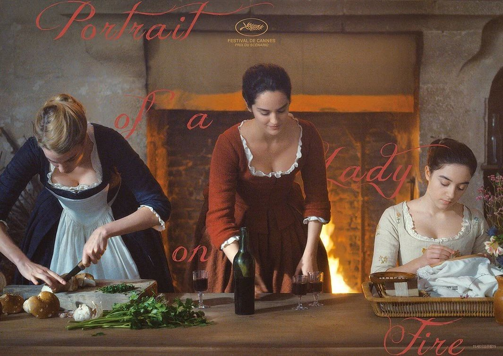
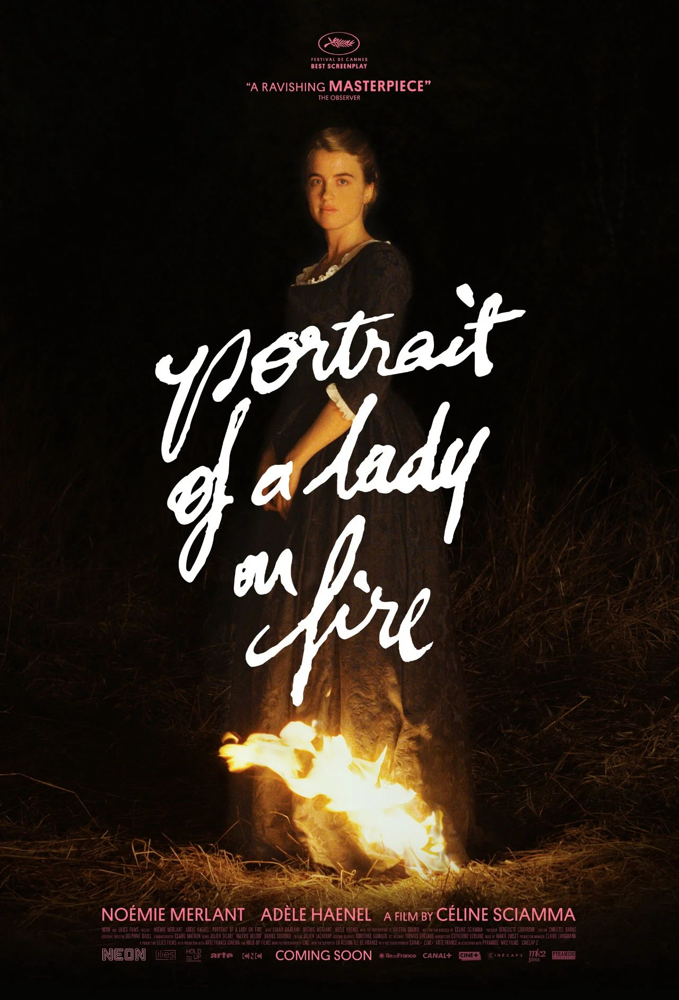
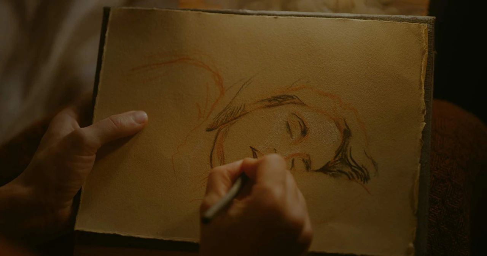

开篇鞠躬致歉！第0期的线上录制泥潭志愿者就遭遇了音频丢失事件Orz丢失的部分已经用加粗字体在下文标出，听到小部分音轨缺失的片段还请大家见谅。
《燃烧女子的肖像》海报（点击跳转豆瓣评分小程序）
欢迎大家收听泥潭的第0期Podcast，在这里，瓜瓜和ta的朋友们将会分享ta们的酷儿视角和瓜言瓜语。今天我们会围绕《燃烧女子的肖像》（文中又称“烧女图”），聊一聊三位酷儿的观影体验和ta们联想到的影视作品、历史事件。

小林：大家好我叫小林，我的声音有一点闷，请大家见谅～我的研究方向主要是文学研究。小林：因为我（第一次录播客）下午去听了一期播客，我看ta们都会介绍自己的研究方向。（笑）小倩：大家好，我是打断了小林的另一位泥潭志愿者小倩，目前在读的是新闻媒体相关的专业。小丸嘤：我叫小丸嘤，我本科念的是中文系，虽然我中文系的课都没有好好上…努力地把每一门课的论文都写成性别研究的论文（笑）…为了通过那些课读了一些文学方面的性别批评之类的……说不定今天就可以用上^ ^1
1:00 女性书写
-这两个女性不是某种工具人，或者是神话里面用来衬托男性角色的女性形象。
-烧女的颠覆性同那些女性超级英雄/电影的颠覆性差别在哪里呢？
-我觉得只有把他们三种，不同阶级的女性结合在一起，才可以对那个时代的女性做出一个群像式的雕刻。
9:40 民国女同、青春期、playwith time
《燃烧女子的肖像》剧照
2
从女儿到母亲
13:22 从女儿到母亲，小姐的画像不同于她母亲的画像18:40 堕胎、科学接生运动、“接生婆”的历史侧影
3
走出男性凝视：迭代的画像和主角形象
21:00 从婚恋市场流水线画像到雾霭之下燃烧的背影24:00 处于边缘的女画家也遵从着学院派的男性规则小林：关于画家画的第一幅画我觉得有很多可阐释的地方，我可以结合女艺术家这一职业展开一点论述。就是画家最开始画的那副画嘛，不是被小姐diss了吗。然后画家自我辩护说要考虑光影的变化啊，什么画面的布局巴拉巴拉的，反而更引小姐嗤之以鼻。我觉得非常有趣的一点就是，这部电影中的画家，她作为一个女画家，在那时是被排挤出画界的中心地位，她必须服从于占据中心地位的学院派画家们所制定的规则，而这些学院派画家往往也是男性。所以我们看到当画家运用那些男性规则、男性笔触去画小姐时，画面是失真的，画中的并不是小姐，而是一个大家闺秀，是符合男性凝视的一个女性形象。所以这样的画作，或者说书写是被小姐所质疑的。那么，在之后的绘画过程中，当画家放下了那些学院派的规则之后，重新了解、描绘小姐，我们才看到了成功的第二幅肖像。所以，我觉得这里很大的一个启示是，对于女性书写很重要的一点是要首先摒弃那些所谓的中性规则里面包含的制约性、规范性要求。女仆堕胎那里我也觉得画面特别有冲击感。画面一侧是堕胎的特写，另一面是幼小的婴儿，这两种分别代表死亡与生命的意象被放在一个镜头下，特别具有冲击感。我记得之前看过一个导演访谈，里面就有记者问到了这个场景，这更多是导演的一个拍摄风格。
24:18 画家的故事也是女性书写的故事（走出男性凝视）25:11 小丸嘤：第二幅画和第一幅画不是一样的姿势吗？
4
深夜中的篝火与歌谣
28:00 深夜篝火晚会的歌谣、宗教仪式、feminism的连结29:30 合唱音乐抓人 克制的视听语言在此处爆发小林：最后的音乐简直啊太绝了！最后小姐在维瓦尔第的《夏》长镜头落泪其实是呼应了小姐与画家相逢的最初。最开始小姐不是让画家描述音乐嘛，画家说音乐很难用文字描述，然后给小姐弹钢琴，一面弹，一面用文字解释那段旋律，“暴雨将至、蛙声齐鸣”什么的。画家那时候谈的其实就是维瓦尔第的《夏》，然后她念的其实是维瓦尔第自己为自己旋律写的配词，叫标题音乐。所以最后小姐在这段狂风骤雨的弦乐中落泪其实是在回应电影开始的这一场景，简直太妙了。（对了，导演访谈的时候也有记者问道为什么选择了维瓦尔第，而不是其他更具古典气质的作曲家，导演说是因为她希望选择一些大众熟知的音乐，这样当乐曲响起的时候更容易唤起大家的共鸣。）

5
小丸嘤批判性解读
41:15 为什么非要有回头就会功亏一篑的规则？神定下的规则为什么没有人质疑？41:46 古罗马的“敬虔”、神的旨意是人世规则的外化吗43:14 小丸嘤：神预测到了附加条件能够让人类失败，剧作或许能更进一步
参考资料
接生婆与现代接生运动 Goldstein, Joshua. "Scissors, Surveys, And Psycho‐Prophylactics: Prenatal Health Care Campaigns And State Building In China, 1949–1954." Journal of Historical Sociology 11, no. 2 (1998):153-184.马嘉兰 Martin, Fran.Backward glances: Contemporary Chinese cultures and the female homoeroticimaginary. Duke University Press, 2010.《三姑六婆》 衣若兰，三姑六婆：明代妇女与社会的探索。中西书局，2019年7月.背景音乐 Anne-Sophie Mutter - The Four Seasons, ConcertoNo. 2 in G minor (＂Summer＂) RV 315 (Op. 8 No. 2)：3. Presto. Tempoimpetuoso d'Estate
出场人物 小林 小倩 小丸嘤
策划 小倩
后期 小倩
排版 Desmond